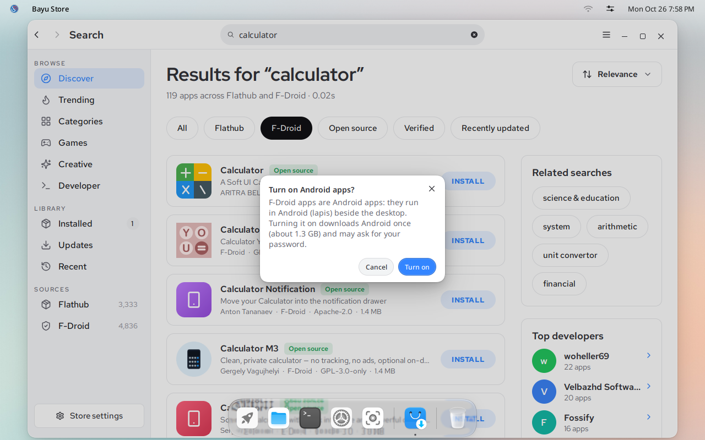
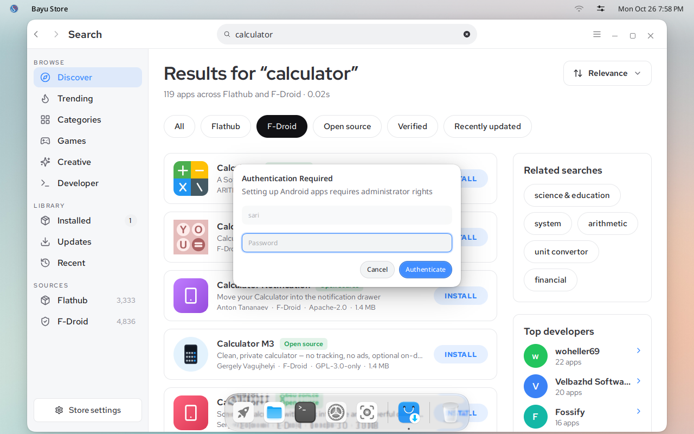
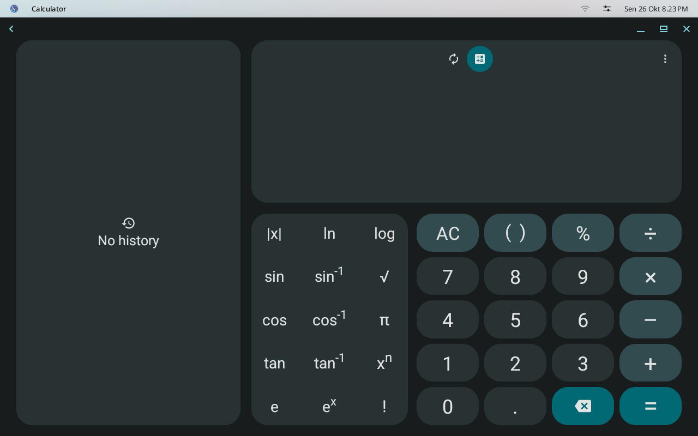
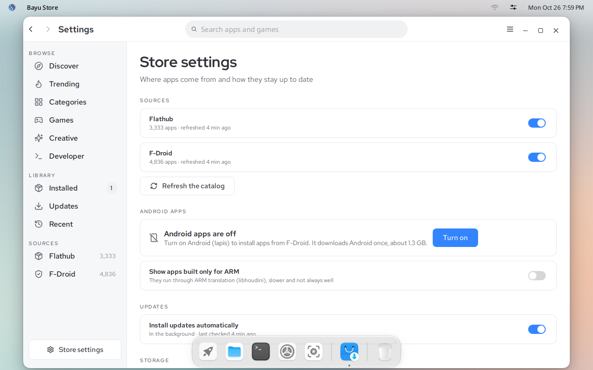

IGN 26 Docs
Android apps
Apps from F-Droid run in Lapis, an Android system that runs next to the desktop. Each app opens in its own window.
Before you start
- 8 GB of memory is recommended.
- Turning Android on downloads about 1.3 GB, once. Use a fast connection.
- You need the administrator password.
Turn on Android
In Bayu Store, click Install on any F-Droid app. Bayu Store asks Turn on Android apps? Click Turn on.

Type your password and click Authenticate.

Wait for the download to finish. It runs in the background, and Bayu Store does not show its progress yet. At 10 Mbit/s it takes about 20 minutes.
Android then starts for the first time, which takes about a minute. After that, click Install on the app again.
When the button says Open, click it. The Android app opens in its own window, like any other app.



You can also turn Android on from Store settings, under Android apps.


If the download stops
The Android image comes from SourceForge mirrors, which are sometimes slow. If Bayu Store says Android apps could not be turned on, open Terminal and run:
sudo lapis init -type VANILLA
It continues where the download stopped and tries other mirrors by itself. When it finishes, install the app again from Bayu Store.
If it says Android is not running
Android needs about a minute to start after you sign in or turn it on. If Bayu Store says Android container is not running or Can't find service: package, wait a minute and click Install again.
Apps built only for ARM
Some Android apps are built only for phone processors (ARM). They are hidden by default. To show them, turn on Show apps built only for ARM in Store settings. They run through translation, so they are slower and some do not work.
Next: Bayu for agents.